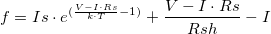
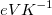
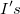
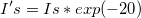

![f = I's \cdot [{e^{(\frac{{V - I \cdot Rs}}{{k \cdot T}} - 20)}} - {e^{ (- 20)}}] + \frac{{V - I \cdot Rs}}{{Rsh}} - I\,\!](../images/How_to_get_a_good_fit_with_a_very_large_or_a_very_small_parameter/math-ded0509a37dacb36a4792dc79ab45e1b.png "f = I's \cdot [{e^{(\frac{{V - I \cdot Rs}}{{k \cdot T}} - 20)}} - {e^{ (- 20)}}] + \frac{{V - I \cdot Rs}}{{Rsh}} - I\,\!")
最終更新日:2017/7/20
カーブフィットを行うとき、次のような問題が起こることがあります。
どちらの場合も、非常に大きいまたは非常に小さいパラメータを避けるために式を再定義する必要があります。例えば、
別の例として、次の非線形ダイオード陰関数を考えます。
, kは一つの単位としてにあります。
この関数でフィットするには、最初にパラメータから（）にリセットし、パラメータが非常に小さくならないようにします。
この方法では、非常に小さいパラメータを防ぎ、最終的にはフィットが収束します。
キーワード:良いフィット, 収束しない, 標準誤差の欠損値, diode関数